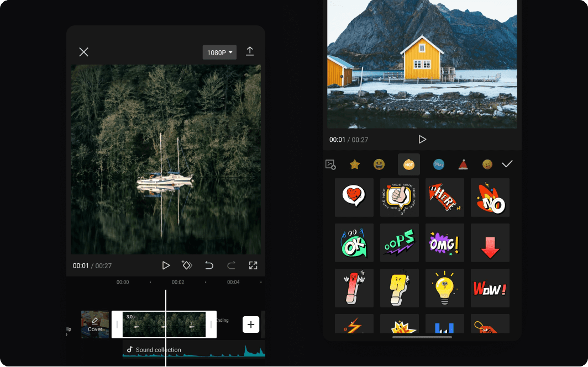

CapCut Pro APK: The Ultimate Video Editing App for All Creators
In today's world, video content is king. From social media influencers to small businesses, everyone is getting in on the action. And when it comes to creating eye-catching videos, having the right tools is essential. Enter CapCut Pro APK, a powerful video editing app that has taken the mobile video editing world by storm. Whether you’re a beginner or a seasoned creator, CapCut Pro is here to make your videos shine with ease.
But what makes CapCut Pro so special? Is it worth downloading? Let’s dive into everything you need to know about CapCut Pro APK, from its features to how to get it on your device, and why it might just become your favorite video editing app.
What is CapCut Pro APK?
CapCut, developed by ByteDance (the same company behind TikTok), is a free video editing app designed to help users create professional-looking videos with minimal effort. While CapCut is available for free on the Google Play Store and Apple App Store, the CapCut Pro APK is the "premium" version, which unlocks even more features and options that make your video editing experience smoother and more versatile.
The APK version refers to a file that you can download from third-party sites, which essentially gives you access to the Pro version of CapCut without the need to pay a subscription or go through the official app store.
With capcut pro apk, users get access to advanced features such as additional filters, music tracks, effects, and the ability to export videos in higher resolutions. Plus, it removes annoying watermarks that can clutter your masterpiece. Essentially, it’s like upgrading your video editing toolkit without spending a dime.
Why Should You Consider Using CapCut Pro APK?
There are plenty of reasons why CapCut Pro APK is making waves in the world of mobile video editing. Here are some of the standout features that make it worth considering:
- No Watermark
One of the most frustrating things about free video editing apps is the watermark that appears on your video. It’s like having a giant "advertisement" in the middle of your creation that ruins the professional look. But with CapCut Pro, say goodbye to watermarks! CapCut Pro lets you create and export videos without any branding or logos, making your video look clean and polished—perfect for social media or even professional projects. - Wide Range of Editing Tools
CapCut Pro isn’t just another app with basic trimming tools. It offers a wide variety of editing features that make it easy to transform your footage into something amazing. Here are some of the key features:- Advanced Trimming & Cutting: Split your clips and adjust their timing with precision. You can cut, trim, or adjust the speed of your video to fit your vision.
- Multi-layer Editing: CapCut Pro allows you to work with multiple layers of video and audio. This feature is perfect for creating more complex videos with picture-in-picture effects, overlays, or a combination of different media types.
- Transitions: Want to add some flair to your video? CapCut Pro has a wide range of transitions that can make your cuts feel smooth and cinematic.
- Text & Stickers: Whether you want to add captions or just have a little fun, CapCut Pro gives you plenty of options for customizing your video with text and stickers. Choose from various fonts and styles, or go all out with animated text!
- Filters & Effects: CapCut Pro comes packed with professional-grade filters and visual effects that can enhance the look of your video. Whether you're going for a vintage vibe or a sleek modern look, you'll find plenty of options to choose from.
- High-Resolution Exporting
Let’s be real—nobody wants to edit a masterpiece only to export it in grainy, low-quality resolution. Thankfully, CapCut Pro lets you export your videos in 1080p or even 4K resolution, making sure your videos look stunning no matter where you share them. Whether you’re posting on Instagram, YouTube, or TikTok, your videos will appear crisp, sharp, and professional. - Music Library & Sound Effects
Music plays a crucial role in setting the tone of your video, and CapCut Pro has a built-in library with a wide range of songs, sound effects, and audio tracks. You can easily add background music to your clips, whether you’re going for a chill vibe or an upbeat tempo. There’s even the option to adjust the audio levels, so your voiceover or sound effects don’t get drowned out by the music. - Speed Control
Another neat feature is the ability to adjust the speed of your clips. You can either slow down footage to create dramatic effects or speed it up to make a time-lapse. CapCut Pro gives you the flexibility to make adjustments that fit your desired outcome, whether you're creating a tutorial or just playing around with visual effects. - No Ads
We’ve all been there—working on a project, getting into the zone, only to be interrupted by a pop-up ad. With CapCut Pro APK, you can kiss those annoying ads goodbye. This means you can focus more on your editing and less on constantly closing pop-ups. - User-Friendly Interface
CapCut Pro is designed to be intuitive, making it accessible even for beginners. The app has an easy-to-navigate interface with drag-and-drop functionality, making it simple to upload, edit, and share your videos.
How to Download CapCut Pro APK
Now that you’re sold on CapCut Pro and its impressive features, you’re probably wondering, "How do I get it?" Here’s how you can download and install CapCut Pro APK:
Step 1: Enable Unknown Sources
Since CapCut Pro APK isn’t available in the official app stores, you need to enable installation from unknown sources. Here’s how:
- Go to your device’s Settings.
- Scroll down and tap on Security or Privacy.
- Enable the option that allows you to install apps from unknown sources.
Step 2: Download the APK File
Search for a trusted website that offers the CapCut Pro APK download link. Download the APK file to your device.
Step 3: Install the APK
Once the APK file is downloaded, tap on it to start the installation process. Follow the on-screen instructions to complete the installation.
Step 4: Launch CapCut Pro
Once the installation is complete, you’ll see the CapCut Pro icon on your home screen. Tap to open the app and start editing your videos!
Is CapCut Pro APK Safe?
While CapCut Pro APK offers great features, it’s important to exercise caution when downloading APK files from third-party sources. Some sites may offer altered versions of the app that could contain malware. To stay safe, make sure to:
- Download from trusted websites.
- Install antivirus software to protect your device from potential threats.
- Be cautious with app permissions and only grant necessary access.
Final Thoughts
CapCut MOD APK is a game-changer for anyone who loves creating videos on their mobile device. With its wide range of features, high-resolution exports, and ad-free experience, it’s perfect for both casual users and seasoned creators. Whether you’re making videos for Instagram, TikTok, YouTube, or just for fun, CapCut Pro has everything you need to take your content to the next level.
So go ahead, download CapCut Pro APK, and let your creativity run wild. The only limit is your imagination!